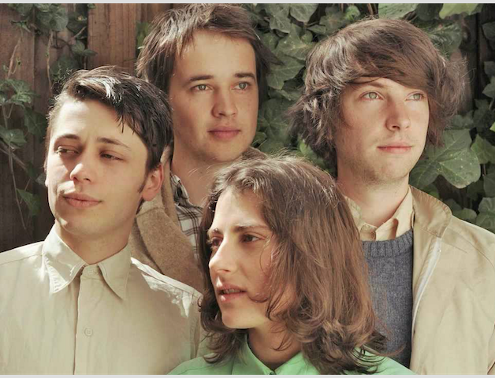

THE HARPOONS
Ezra Furman and the Harpoons were a four-piece rock band active between 2006-2011. The band consisted of Ezra Furman (vocals, guitar), Job Mukkada (bass guitar), Adam Abrutyn (drums), and Andrew Langer (guitar). They formed at Tufts University in 2006.
FOLLOW THEM